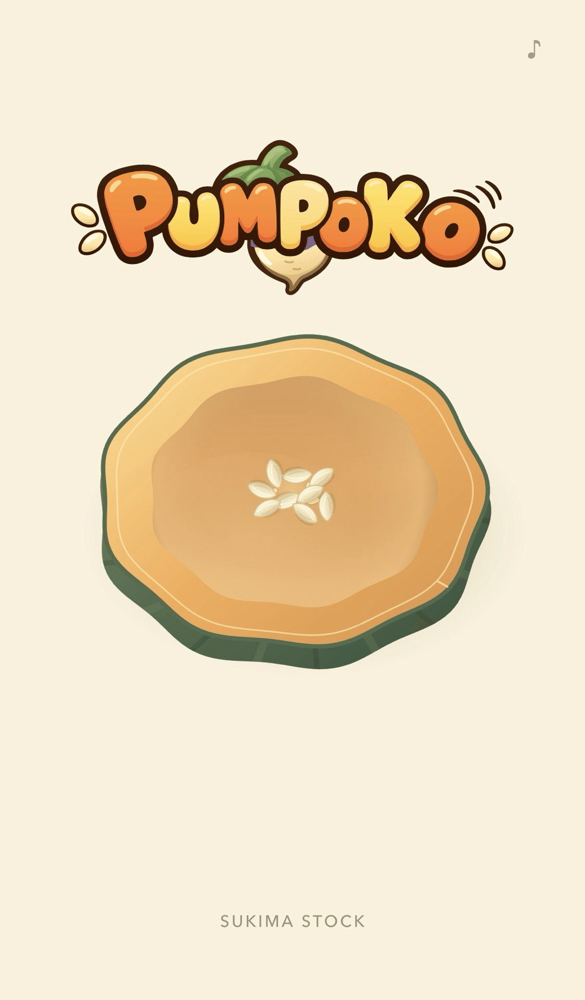
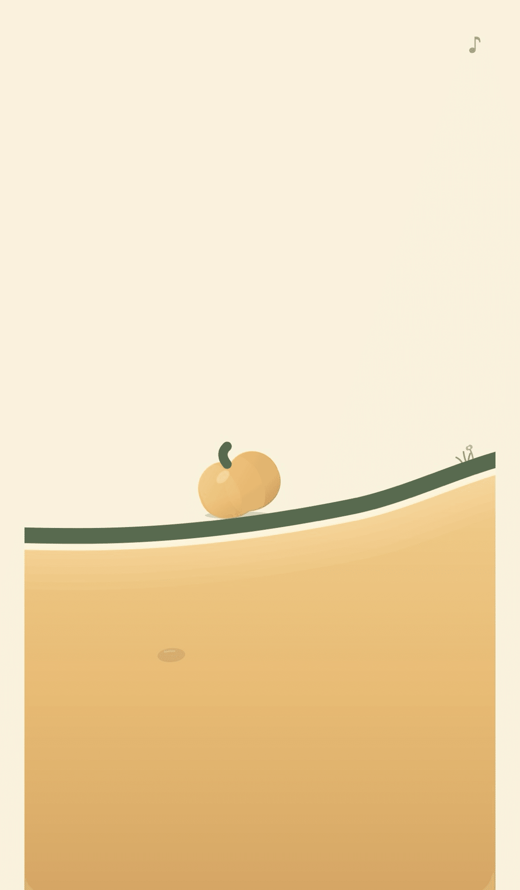
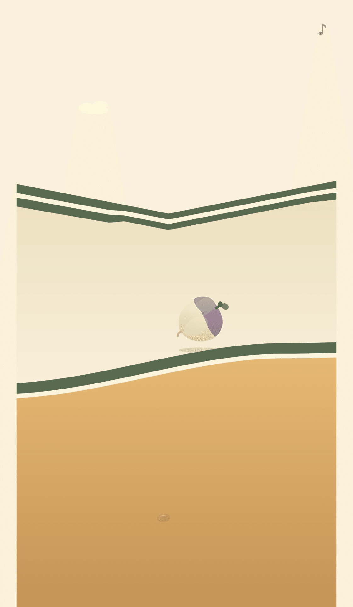
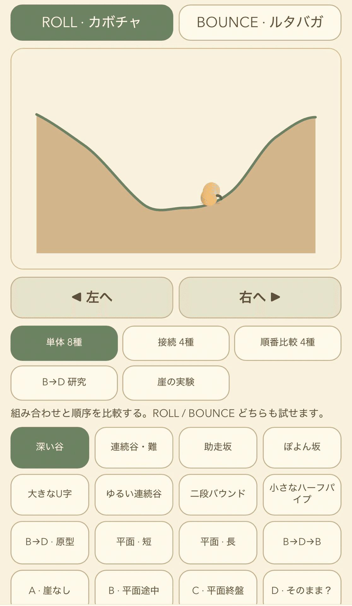

ゲームジャムでカボチャを転がした
Ultimate AI-Powered Game Jam #5に参加して、
『PUMPOKO』というゲームを作った。

今回のテーマは
「PUMPKIN（カボチャ）」と「RUTABAGA（ルタバガ）」。
ルタバガは、スウェーデンカブとも呼ばれる根菜らしい。
転がるカボチャ、跳ねるルタバガ
最初に試したのは、二つの野菜を動かしてみることだった。
カボチャは地上をころころ転がる。
坂道で勢いをつけ、谷を飛び越える。
ルタバガは地下をぽよんぽよん跳ねる。
着地のタイミングでタップすると、さらに高く跳ねる。
同じ左右の操作なのに、かなり感触が違う。
どちらも気に入ったので、二つをバトンタッチさせたくなった。
カボチャで進んだ先に、ルタバガが詰まった穴がある。
勢いよくぶつかると、ルタバガが「スポッ」と押し出され、
今度はカボチャが穴に収まる。
次はルタバガの番。
ルタバガで進んだ先にも同じような穴があり、
今度はカボチャに交代する。
これを繰り返すことで、
地上と地下を行き来するゲームになった。


ゲームを作るための実験室
基本の仕組みはできた。
ただ、実際に遊んでみると、ほとんど失敗せず最後まで進んでしまった。
動きは楽しくても、もう少し難所も欲しい。
「惜しい！」と思えるような地形を作りたくなった。
そこで、ステージを試すための仕組みを作った。
深い谷や連続する坂道、助走をつける斜面などを並べ、
実際にカボチャとルタバガを動かしてみる。
何も考えず進むと落ちてしまうが、
一度戻って助走をつければ飛び越えられるバランスを調整した。
ゲームを作るために実験室をつくるという、この作業自体もかなり楽しかった。

カボチャの中から始まる
もう一つ時間をかけたのが、ゲームの始まりと終わりだった。
タイトル画面には、半分に切ったカボチャがある。
指で動かすと、中の種が少しずつ外れていく。
全部外れると、カメラがそのままカボチャの中へ入る。
落ちた種は地面に根付き、芽を出し、カボチャに育つ。
そのうちの一つが転がり始めると、いつの間にかもうゲームが始まっている。
最後はカボチャ自身が地形のくぼみに「スポッ」と収まるようにした。
そこから地上と地下を少し眺め、そのままタイトルへ戻る。
公開すると、BGMやシームレスな体験を褒めてもらうことができた。
アイデアは良かったと思うが、ステージ作りには課題があるので、まだまだ育てていきたい。
これまでゲームジャムで作ってきたものとは一味違うゲームが作れたような気がしている。
ここで終わりではなく、色んなステージを増やしたり、変わった形の野菜を増やしたり、
色んな遊びも出来るかもしれない。